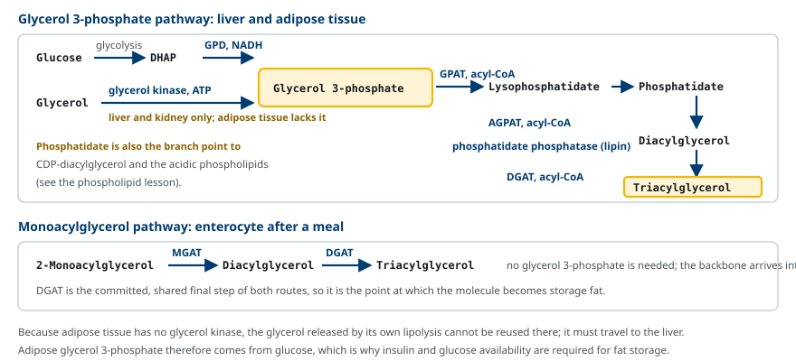
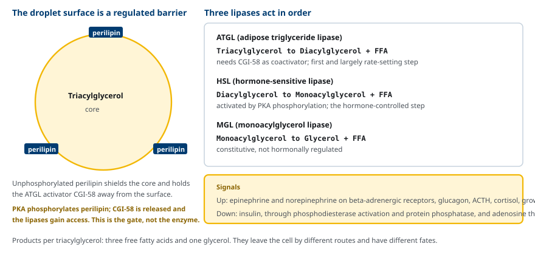
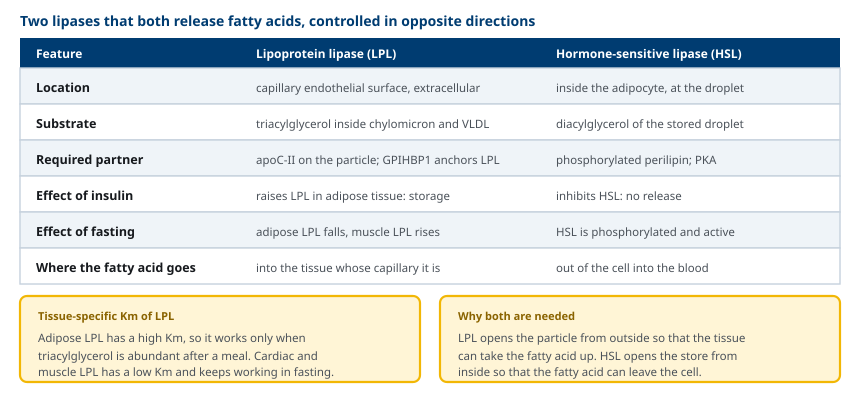
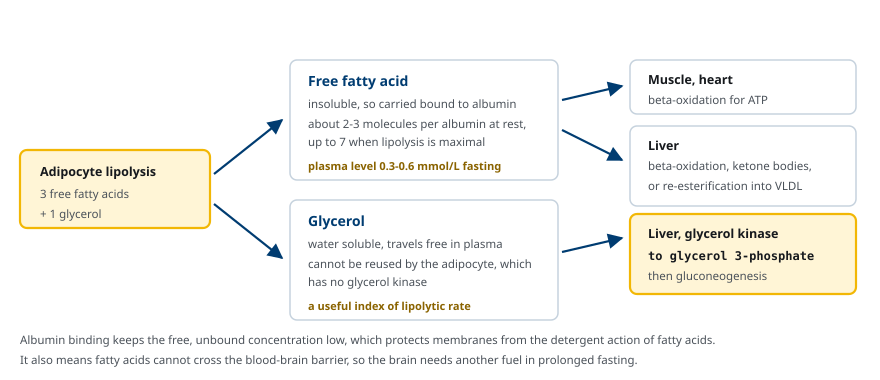
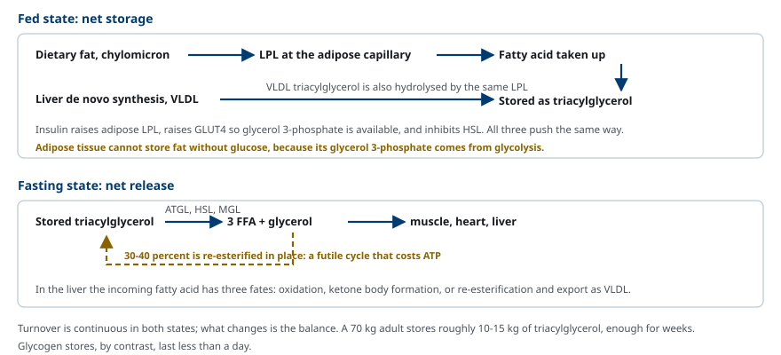

M02-W08-L01 · 대사생화학 · 지질대사
Triacylglycerol 대사와 지방 동원
Triacylglycerol Metabolism and Fat Mobilisation
학습목표
- Triacylglycerol 저장의 생리적 의의를 glycogen 저장과 비교해 설명한다.
- Glycerol 3-phosphate 경로와 monoacylglycerol 경로를 조직별로 구분해 설명한다.
- Lipoprotein lipase와 hormone-sensitive lipase의 위치·기질·조절 차이를 대조해 설명한다.
- Perilipin과 ATGL·HSL·MGL의 순차적 작용으로 지방 분해 조절을 설명한다.
- 유리지방산의 알부민 운반과 glycerol의 운명을 조직별로 설명한다.
- 지방 동원의 호르몬 조절과 insulin 저항성에서 이 조절이 깨지는 양상을 설명한다.
선수지식
- M02-W07-L01 식이지질의 소화·흡수·운반 — chylomicron과 apoC-II
- M02-W07-L02 지방산 합성과 조절 — acyl-CoA의 생성
- M02-W07-L03 지방산 산화와 관련 대사 이상 — 유리지방산의 조직별 이용
강의 구성
- 1. Triacylglycerol 저장의 생리적 의의
- 2. Triacylglycerol의 합성: 두 경로
- 3. Lipoprotein lipase: 혈중 입자에서 조직으로
- 4. 지방 분해: lipid droplet과 세 가지 lipase
- 5. Lipoprotein lipase와 hormone-sensitive lipase의 대조
- 6. 유리지방산과 glycerol의 운명
- 7. 지방조직과 간의 triacylglycerol 회전
- 8. 지방 동원 조절의 이상
1. Triacylglycerol 저장의 생리적 의의
사람의 에너지 저장은 두 형태로 나뉜다. Glycogen과 triacylglycerol이다. 두 저장고의 규모가 크게 다르다.
| 저장 형태 | 위치 | 양(70 kg 성인) | 열량 | 지속 시간 |
|---|---|---|---|---|
| Glycogen | 간 약 100 g, 근육 약 300~400 g | 400~500 g | 약 1,600~2,000 kcal | 1일 미만 |
| Triacylglycerol | 지방조직 | 10~15 kg | 약 90,000~135,000 kcal | 수 주 |
차이의 이유는 두 가지다. 첫째, triacylglycerol은 1 g당 약 9 kcal을 내는데 glycogen은 약 4 kcal이다. 둘째, glycogen은 수화되어 저장되므로 자신의 무게의 약 두 배에 해당하는 물을 함께 지닌다. Triacylglycerol은 거의 무수 상태로 저장된다. 두 효과를 합치면 같은 에너지를 저장할 때 glycogen은 triacylglycerol의 약 다섯 배에서 여섯 배의 무게를 차지한다.
다만 glycogen에는 triacylglycerol이 할 수 없는 일이 있다. Glycogen은 분해되면 포도당을 직접 공급하고 산소 없이도 ATP를 만들 수 있다. 짝수 사슬 지방산은 분해되어 acetyl-CoA가 되므로 포도당으로 전환되지 않고, 산화에는 산소가 반드시 필요하다. 그래서 두 저장고는 서로를 대체하지 않고 역할을 나눈다.
저장과 동원은 언제나 동시에 진행된다. 저장고의 크기가 변하지 않는 상태에서도 triacylglycerol은 계속 합성되고 분해되고 있으며, 식사 상태에 따라 균형이 어느 쪽으로 기우는지가 달라진다. 이 수업은 그 회전(turnover)과 그것을 조절하는 장치를 다룬다.
2. Triacylglycerol의 합성: 두 경로
Triacylglycerol을 만들려면 glycerol 골격과 활성화된 지방산(acyl-CoA)이 필요하다. 골격을 어디서 얻는지에 따라 경로가 둘로 나뉜다.
(1) Glycerol 3-phosphate 경로 — 간과 지방조직
출발 물질은 glycerol 3-phosphate이고, 그 공급원이 조직에 따라 다르다.
- 간과 신장: glycerol kinase가 혈중 glycerol을 직접 인산화할 수 있다.
- 지방조직: glycerol kinase가 없다. 따라서 glycolysis의 중간체인 dihydroxyacetone phosphate(DHAP)가 glycerol 3-phosphate dehydrogenase에 의해 환원되어 공급된다.
이 차이가 중요한 결과를 낳는다. 지방조직은 포도당 없이 지방을 저장할 수 없다. Glycerol 골격이 glycolysis에서 오기 때문이다. Insulin이 GLUT4를 통해 포도당 흡수를 늘리는 것이 지방 저장의 전제 조건이 되는 이유가 여기에 있다. 또 지방조직이 자기 분해에서 내놓은 glycerol을 재사용하지 못하고 간으로 보내야 하는 이유도 같다.
이후 반응은 네 단계다.
1. GPAT가 glycerol 3-phosphate의 sn-1에 acyl기를 붙여 lysophosphatidate를 만든다. 2. AGPAT가 sn-2에 붙여 phosphatidate(diacylglycerol 3-phosphate)를 만든다. 3. Phosphatidate phosphatase(lipin)가 인산을 떼어 diacylglycerol을 만든다. 4. DGAT가 sn-3에 세 번째 acyl기를 붙여 triacylglycerol을 완성한다.
(2) Monoacylglycerol 경로 — 소장 상피세포
식후 상피세포는 내강에서 2-monoacylglycerol을 그대로 받아들이므로 골격을 새로 만들 필요가 없다. MGAT가 acyl기를 붙여 diacylglycerol을, DGAT가 한 번 더 붙여 triacylglycerol을 만든다.

두 경로에서 phosphatidate와 diacylglycerol이 분기점이라는 점을 기억해 둔다. Phosphatidate는 CDP-diacylglycerol을 거쳐 산성 phospholipid로, diacylglycerol은 CDP-choline 경로를 거쳐 phosphatidylcholine으로 갈 수 있다. 저장 지질과 막 지질이 같은 중간체에서 갈라진다.
3. Lipoprotein lipase: 혈중 입자에서 조직으로
지방조직이 저장할 지방산은 자체 합성만으로 오지 않는다. 대부분은 혈액의 triacylglycerol 풍부 lipoprotein, 즉 chylomicron과 VLDL에서 온다. 그런데 이 입자의 중심에 있는 triacylglycerol은 세포 안으로 들어갈 수 없다. 지방산 형태로 잘라 내야 한다.
이 일을 lipoprotein lipase(LPL)가 한다. LPL의 특징은 위치다. LPL은 세포 안이 아니라 모세혈관 내피세포의 바깥 표면에 붙어 있으며, GPIHBP1이라는 단백질이 LPL을 내피세포에 고정하고 혈액 쪽으로 제시한다. 작용에는 입자가 HDL에서 받아 온 apoC-II가 보조인자로 필요하다.
LPL이 중심부 triacylglycerol을 가수분해하면 유리지방산과 glycerol이 나오고, 지방산은 그 모세혈관이 지나는 조직으로 들어간다. 즉 어느 조직의 LPL이 작동하는지가 지방산의 배분을 결정한다.
배분은 조직별 LPL의 성질과 발현량으로 조절된다.
- 지방조직 LPL은 Km이 높아 혈중 triacylglycerol이 많을 때, 즉 식후에만 효율적으로 작동한다. Insulin이 발현을 올린다.
- 심장과 골격근 LPL은 Km이 낮아 농도가 낮은 공복에서도 계속 작동한다. 공복에서 근육 LPL은 오히려 올라간다.
따라서 식후에는 지방산이 지방조직으로, 공복에는 근육과 심장으로 간다. 같은 효소가 발현 조절만으로 연료의 방향을 바꾼다.
4. 지방 분해: lipid droplet과 세 가지 lipase
지방세포 안의 triacylglycerol은 lipid droplet 안에 저장된다. Droplet의 표면은 phospholipid 단층과 그 위에 붙은 단백질로 덮여 있는데, 그중 가장 중요한 것이 perilipin이다.
분해는 세 효소가 순서대로 수행한다.
1. ATGL(adipose triglyceride lipase): triacylglycerol → diacylglycerol + 유리지방산. 보조활성인자 CGI-58이 필요하다. 첫 반응이며 전체 속도에 가장 크게 기여한다. 2. HSL(hormone-sensitive lipase): diacylglycerol → monoacylglycerol + 유리지방산. 호르몬 조절을 받는 단계다. 3. MGL(monoacylglycerol lipase): monoacylglycerol → glycerol + 유리지방산. 항상 작동하며 호르몬 조절을 받지 않는다.
조절의 핵심은 효소 자체가 아니라 접근이다. 인산화되지 않은 perilipin은 droplet 표면을 덮어 lipase가 기질에 닿지 못하게 하고, 동시에 CGI-58을 붙잡아 ATGL에서 떨어져 있게 한다.
Epinephrine이나 glucagon이 수용체에 결합하면 cAMP가 올라가고 protein kinase A(PKA)가 활성화된다. PKA는 두 곳을 인산화한다.
- Perilipin을 인산화하면 구조가 바뀌어 CGI-58이 풀려나 ATGL을 활성화하고, 표면이 열려 lipase가 접근한다.
- HSL을 인산화하면 효소 자체의 활성이 올라가고 droplet 표면으로 이동한다.

Insulin은 반대로 작동한다. Insulin은 phosphodiesterase를 활성화해 cAMP를 분해하고 protein phosphatase를 통해 HSL과 perilipin을 탈인산화한다. 그래서 식후에는 분해가 거의 멈춘다. Insulin은 지방 분해를 억제하는 가장 강력한 호르몬이며, 매우 낮은 농도에서도 작동한다.
지방 분해를 올리는 호르몬은 여럿이다. Epinephrine과 norepinephrine이 beta-adrenergic 수용체를 통해 작용하고, glucagon, ACTH, cortisol, growth hormone, thyroid hormone이 더한다. 여러 신호가 같은 방향으로 모이지만 끄는 신호는 insulin 하나가 지배한다.
5. Lipoprotein lipase와 hormone-sensitive lipase의 대조
두 효소는 모두 triacylglycerol의 ester 결합을 끊어 유리지방산을 내놓지만, 하는 일의 의미가 정반대다.

| 항목 | Lipoprotein lipase | Hormone-sensitive lipase |
|---|---|---|
| 위치 | 모세혈관 내피 표면, 세포 밖 | 지방세포 안, droplet 표면 |
| 기질 | Chylomicron·VLDL 중심의 triacylglycerol | 저장된 droplet의 diacylglycerol |
| 보조 요소 | 입자의 apoC-II, 내피의 GPIHBP1 | 인산화된 perilipin, PKA |
| Insulin | 지방조직 LPL을 올린다(저장) | 억제한다(동원 중단) |
| 공복 | 지방조직 LPL은 내려가고 근육 LPL은 올라간다 | 인산화되어 활성화된다 |
| 지방산의 행방 | 그 모세혈관이 지나는 조직으로 들어간다 | 세포에서 혈액으로 나간다 |
핵심은 insulin에 대한 반응 방향이 반대라는 점이다. Insulin은 LPL을 통해 들여오고 HSL을 억제해 내보내지 않으므로, 식후에는 두 조절이 모두 저장 쪽으로 작동한다. 공복에는 두 조절이 모두 동원 쪽으로 돌아간다. 하나의 호르몬이 두 효소를 반대로 조절해 저장고의 방향을 바꾼다.
6. 유리지방산과 glycerol의 운명
Triacylglycerol 한 분자가 완전히 분해되면 유리지방산 세 개와 glycerol 한 개가 나온다. 두 산물은 성질이 달라 서로 다른 길을 간다.
유리지방산은 물에 거의 녹지 않으므로 혈액에서 알부민에 결합해 운반된다. 알부민 한 분자는 보통 두세 개의 지방산을 싣고, 지방 분해가 최대일 때는 일곱 개까지 싣는다. 공복 혈중 유리지방산 농도는 대략 0.3~0.6 mmol/L이다.
알부민 결합에는 두 가지 의미가 있다.
- 보호: 유리지방산은 계면활성 성질이 있어 농도가 높으면 막을 손상한다. 알부민에 결합해 있으면 유리 상태의 농도가 낮게 유지된다.
- 제약: 알부민-지방산 복합체는 혈액뇌장벽을 넘지 못한다. 그래서 뇌는 지방산을 연료로 쓸 수 없고, 장기 공복에서 케톤체가 필요해진다.
조직에 도달한 유리지방산은 근육과 심장에서 산화되고, 간에서는 세 가지 운명 가운데 하나를 따른다. 산화되거나, 케톤체로 전환되거나, 다시 triacylglycerol로 합성되어 VLDL에 실려 나간다.
Glycerol은 물에 녹으므로 운반체 없이 혈액을 돈다. 지방세포는 glycerol kinase가 없어 자신이 내놓은 glycerol을 재사용하지 못하므로, glycerol은 간과 신장으로 간다. 거기서 glycerol kinase가 인산화해 glycerol 3-phosphate로 만들고, 이것은 gluconeogenesis의 기질이 되거나 triacylglycerol 합성에 다시 쓰인다. 혈중 glycerol 농도는 지방 분해 속도의 지표로 쓸 수 있다.

7. 지방조직과 간의 triacylglycerol 회전
저장과 동원은 교대로 일어나는 것이 아니라 항상 동시에 진행되며, 균형만 이동한다.
식후 insulin이 세 가지를 동시에 한다. 지방조직 LPL을 올려 입자에서 지방산을 끌어오고, GLUT4를 통해 포도당 흡수를 늘려 glycerol 3-phosphate를 공급하고, HSL과 perilipin을 탈인산화해 분해를 끈다. 세 작용이 모두 저장 쪽을 향한다.
공복 glucagon과 catecholamine이 PKA를 통해 분해를 켠다. 유리지방산이 혈액으로 나가 근육과 심장의 연료가 되고, 간에서는 산화와 ketogenesis, 그리고 VLDL 합성에 쓰인다. 공복이 길어지면 간의 VLDL 생산보다 산화와 ketogenesis가 우세해진다.

여기에 무익한 순환(futile cycle)이 끼어 있다. 분해로 생긴 유리지방산 가운데 30~40%는 세포를 떠나지 못하고 같은 지방세포 안에서 다시 ester화된다. 활성화에 ATP가 들어가므로 순수한 에너지 손실이다. 다만 이 순환은 방향 전환을 빠르게 만든다. 두 방향의 반응이 항상 돌고 있으면, 호르몬 신호가 바뀔 때 새로 효소를 만들 필요 없이 균형만 기울여 즉시 방향을 바꿀 수 있다.
간의 triacylglycerol 회전도 같은 논리를 따른다. 간은 지방을 장기 저장하는 기관이 아니므로, 들어온 지방산을 태우거나 VLDL로 내보낸다. 유입이 처리 능력을 넘으면 간에 쌓인다. 유입을 늘리는 요인(지방 분해 과다, 고지방·고fructose 식사), 산화를 줄이는 요인(insulin 신호에 의한 malonyl-CoA 상승), 배출을 줄이는 요인(apoB 또는 MTP 기능 저하, 알코올)이 겹칠 때 지방간이 생긴다.
8. 지방 동원 조절의 이상
(1) Insulin 저항성과 지방조직
지방조직의 insulin 저항성에서 가장 먼저 깨지는 것이 HSL 억제다. Insulin이 분해를 억제하지 못하므로 식후에도 유리지방산이 혈액으로 계속 흘러나온다. 이것이 세 가지 연쇄 결과를 만든다.
- 간으로 들어오는 지방산이 늘어 VLDL 생산이 증가하고 혈중 triacylglycerol이 올라간다. 간에 지방이 쌓여 지방간이 된다.
- 근육에서 지방산이 과잉 공급되면 포도당 이용이 더 떨어져 insulin 저항성이 심해진다.
- HDL이 감소하고 small dense LDL이 늘어나는 이상지질혈증 삼중 양상이 나타난다.
즉 혈중 유리지방산의 상승은 결과이면서 동시에 원인이다.
(2) 조절 단백질의 유전적 결함
| 결함 | 유전자 | 양상 |
|---|---|---|
| ATGL 결핍 | PNPLA2 | Neutral lipid storage disease with myopathy. 근육·심장·간에 triacylglycerol이 쌓인다 |
| CGI-58 결핍 | ABHD5 | Chanarin-Dorfman syndrome. 어린선과 함께 지질 축적이 나타난다 |
| Perilipin 결핍 | PLIN1 | 부분 지방이상증, 심한 insulin 저항성과 고중성지방혈증 |
| Lipodystrophy(전신) | AGPAT2, BSCL2 등 | 지방조직 자체가 없어 지질을 저장할 곳이 없다 |
Lipodystrophy는 역설적으로 보이는 질환이다. 지방이 적은데 심한 insulin 저항성, 고중성지방혈증, 지방간이 나타난다. 이유는 저장 공간이 없어 지질이 간과 근육에 쌓이기 때문이다. 치료로 leptin 유사체(metreleptin)를 쓰면 식욕과 간의 지방 축적이 개선된다. 지방조직이 과도한 것과 없는 것이 비슷한 대사 결과를 만든다는 점은 지방조직이 단순한 저장고가 아니라 지질을 안전하게 격리하는 기관임을 보여 준다.
(3) 지방 분해를 표적으로 하는 약물
- Beta-blocker는 catecholamine의 지방 분해 자극을 줄인다. 저혈당 증상을 가리는 효과도 같은 경로에서 온다.
- Niacin은 지방세포의 수용체(HCA2)를 통해 cAMP를 낮춰 지방 분해를 억제하고, 간으로 들어오는 지방산을 줄여 VLDL 생산을 낮춘다. 이것이 niacin의 지질 개선 기전이다.
- Thiazolidinedione은 PPARγ를 활성화해 지방조직의 저장 능력을 늘린다. 지질을 간과 근육에서 지방조직으로 되돌려 insulin 저항성을 개선한다는 설명이 여기서 나온다.
확인 문항
지방조직은 포도당 공급이 없으면 지방을 저장하지 못한다. 그 생화학적 이유를 설명하고, 같은 사실이 왜 glycerol의 재사용을 불가능하게 하는지 설명하라.
해설
Triacylglycerol 합성에는 glycerol 3-phosphate 골격이 필요하다. 간과 신장은 glycerol kinase를 가지고 있어 혈중 glycerol을 직접 인산화할 수 있지만, 지방조직에는 glycerol kinase가 없다. 따라서 지방조직의 glycerol 3-phosphate는 glycolysis 중간체인 dihydroxyacetone phosphate가 환원되어 만들어지며, 포도당 유입에 전적으로 의존한다. 같은 이유로 지방조직은 자신의 분해에서 나온 glycerol을 다시 인산화할 수 없으므로 그 glycerol은 혈액으로 나가 간으로 가야 한다. 간에서는 glycerol 3-phosphate가 되어 gluconeogenesis의 기질로 쓰인다.
Lipoprotein lipase와 hormone-sensitive lipase는 모두 triacylglycerol을 가수분해한다. 두 효소를 혼동하지 않기 위한 네 가지 구분 기준을 제시하라.
해설
첫째, 위치가 다르다. LPL은 모세혈관 내피세포의 바깥 표면에 있어 세포 밖에서 작동하고, HSL은 지방세포 안에서 droplet 표면에 작용한다. 둘째, 기질이 다르다. LPL은 chylomicron과 VLDL 중심의 triacylglycerol을, HSL은 저장된 droplet의 diacylglycerol을 분해한다. 셋째, 보조 요소가 다르다. LPL은 입자의 apoC-II와 내피의 GPIHBP1을 필요로 하고, HSL은 PKA에 의한 인산화와 인산화된 perilipin을 필요로 한다. 넷째, insulin에 대한 반응이 반대다. Insulin은 지방조직 LPL의 발현을 올려 지방산을 들여오고, HSL을 억제해 내보내지 않는다. 결과적으로 LPL은 조직으로 들이는 방향, HSL은 혈액으로 내보내는 방향으로 작동한다.
지방 분해의 호르몬 조절에서 효소 자체의 활성화보다 perilipin의 인산화가 먼저 논의되는 이유를 설명하라.
해설
ATGL과 HSL이 활성 상태여도 기질에 닿지 못하면 분해가 일어나지 않는다. 인산화되지 않은 perilipin은 droplet 표면을 덮어 lipase의 접근을 막고, 동시에 ATGL의 보조활성인자 CGI-58을 붙잡아 ATGL에서 떨어져 있게 한다. PKA가 perilipin을 인산화하면 CGI-58이 풀려 ATGL이 활성화되고 표면이 열려 HSL이 접근한다. PKA는 HSL 자체도 인산화하지만, 접근이 열리지 않으면 그 활성화는 의미가 없다. 그래서 조절의 1차 관문은 효소 활성이 아니라 기질에 대한 접근이다. ATGL 또는 CGI-58의 유전적 결함에서 조직에 triacylglycerol이 쌓이는 것도 같은 논리로 설명된다.
저혈당 환자에서 혈중 유리지방산과 케톤체를 함께 측정하는 이유를 세 가지 패턴으로 설명하라.
해설
두 지표의 조합이 저혈당의 원인을 갈라 준다. 첫째, 유리지방산과 케톤체가 모두 낮으면 지방 동원 자체가 억제된 상태이므로 insulin 과다(insulinoma, insulin 또는 sulfonylurea 투여)를 가리킨다. Insulin은 HSL을 억제하는 가장 강력한 신호이기 때문이다. 둘째, 유리지방산은 높은데 케톤체가 낮으면 동원은 되지만 산화나 ketogenesis가 막힌 것이므로 지방산 산화 결핍을 가리킨다. 셋째, 둘 다 높으면 공복에 대한 정상적인 대사 반응이 일어난 상태이므로 glycogen 저장병이나 호르몬 결핍처럼 포도당 공급 쪽의 문제를 본다.
전신 lipodystrophy 환자는 지방조직이 거의 없는데도 심한 insulin 저항성, 고중성지방혈증, 지방간을 보인다. 이 역설을 설명하라.
해설
지방조직의 기능은 단순한 저장이 아니라 지질을 대사적으로 활성이 없는 형태로 격리하는 것이다. 저장 공간이 없으면 식이와 간에서 유래한 triacylglycerol을 안전하게 둘 곳이 없어 간, 근육, 심장 등에 쌓인다. 간에 쌓이면 지방간과 VLDL 과다 생산이 생겨 혈중 triacylglycerol이 올라가고, 근육에 쌓이면 포도당 이용이 떨어져 insulin 저항성이 심해진다. 또 지방조직이 분비하는 leptin과 adiponectin이 부족해 식욕 조절과 지질 산화 신호도 함께 깨진다. 그래서 치료에 leptin 유사체가 쓰인다. 비만과 lipodystrophy가 비슷한 대사 결과를 만드는 것은 양쪽 모두 지방조직의 안전한 저장 능력이 수요에 못 미치기 때문이다.
지방세포에서 분해된 유리지방산의 30~40%가 같은 세포 안에서 다시 ester화된다. ATP를 소비하는 이 순환이 유지되는 이유를 설명하라.
해설
재ester화에는 지방산 활성화에 ATP 두 개 상당이 들어가므로 순수한 에너지 손실이다. 그러나 합성과 분해가 동시에 낮은 수준으로 계속 돌고 있으면, 호르몬 신호가 바뀔 때 새로 효소를 합성하거나 경로를 켜는 시간 없이 두 방향의 상대적 속도만 바꾸어 즉시 방향을 전환할 수 있다. 운동 시작이나 식사 직후처럼 수십 초 단위로 연료 흐름을 바꾸어야 하는 상황에서 이 민감도가 필요하다. 또 이 순환은 세포 안의 유리지방산 농도를 낮게 유지해 지방산의 계면활성 성질에 의한 막 손상을 막는 역할도 한다.
참고문헌
- Ferrier DR (ed). Lippincott Illustrated Reviews: Biochemistry. Chapter 16, Fatty Acid, Ketone Body, and Triacylglycerol Metabolism.
- Zechner R et al. FAT SIGNALS: lipases and lipolysis in lipid metabolism and signaling. Cell Metab 2012;15:279–291.
- Young SG, Zechner R. Biochemistry and pathophysiology of intravascular and intracellular lipolysis. Genes Dev 2013;27:459–484.
- Coleman RA, Mashek DG. Mammalian triacylglycerol metabolism: synthesis, lipolysis, and signaling. Chem Rev 2011;111:6359–6386.
- Brasaemle DL. Thematic review series: adipocyte biology. The perilipin family of structural lipid droplet proteins. J Lipid Res 2007;48:2547–2559.
- Garg A. Clinical review: lipodystrophies — genetic and acquired body fat disorders. J Clin Endocrinol Metab 2011;96:3313–3325.